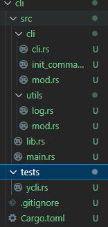
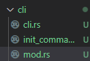

介绍
rust开发前端脚手架
# rust版本脚手架开发
# 1.开发流程
脚手架创建
cargo init
脚手架开发
分包
参数解析
脚手架调试
cargo install --path .
脚手架发布
cargo publish
# 2.为什么需要脚手架框架
脚手架框架是一种用于快速构建项目的工具，它提供了一套通用的项目结构、模板代码、工具集等，让开发者可以快速搭建项目的基础框架，从而更快地进行业务开发。 使用脚手架框架的好处有以下几点：
- 提高开发效率：通过脚手架框架提供的模板代码和工具集，可以快速搭建项目的基础框架，省去了从零开始搭建项目的时间和精力。
- 统一项目结构：脚手架框架提供了一套通用的项目结构，可以避免每个开发者都按照自己的习惯来组织项目结构，从而使得项目更加规范和易于维护。
- 降低学习成本：脚手架框架通常提供了一套简单易懂的命令行接口，可以帮助开发者快速上手，降低学习成本。
- 提高项目质量：脚手架框架提供了一些工具集，例如自动化测试、代码检查等，可以帮助开发者提高项目的质量和稳定性。 总之，脚手架框架可以帮助开发者快速搭建项目的基础框架，提高开发效率和项目质量，降低学习成本，是现代软件开发中不可或缺的工具之一。
# 1.rust cli开发框架
在Rust生态系统中，有几个主流的CLI（命令行界面）开发框架，它们分别是：
Clap：Clap是一个功能强大且易于使用的命令行参数解析库。它提供了丰富的功能，如子命令、选项、位置参数、环境变量解析等。Clap还支持生成帮助文档和自动补全功能。
StructOpt：StructOpt是一个基于Clap的库，它通过使用属性宏来简化命令行参数的定义和解析。它允许你将参数定义为结构体的字段，并自动生成解析器。StructOpt还提供了一些额外的特性，如默认值、多值参数、自定义解析器等。
Docopt：Docopt是一个基于文档的命令行参数解析器。它使用简洁的文本描述来定义命令行参数，并自动生成解析器。Docopt支持子命令、选项、位置参数等，并且生成的解析器具有非常直观的使用方式。
Gumdrop：Gumdrop是一个轻量级的命令行参数解析库，它提供了简单而灵活的API。它支持选项、位置参数、子命令等，并且可以轻松地与其他Rust库集成。
本文主要使用clap开发
# 2.clap基本使用
use clap::{Parser,Subcommand,Args,command,arg};
use colored::Colorize;
use dialoguer::MultiSelect;
#[derive(Parser)]
#[command(author, version, about)]
///工具介绍
struct Cli{
#[command(subcommand)]
command:Option<Commands>,
///启动调试模式
#[arg(short,long,default_value="false")]
debug:Option<bool>
}
#[derive(Subcommand)]
enum Commands{
///测试打印
Print {
txt:Option<String>,
#[arg(short,long)]
name:Option<String>,
},
///介绍子命令
Choice
}
fn main() {
let cli=Cli::parse();
let list = vec![
"苹果",
"香蕉",
"葡萄"
];
match &cli.command{
Some(value)=>{
match value {
Commands::Print { txt,name }=>{
if let Some(name)=name{
println!("输入的参数是 {}",name.green());
}
println!("输入的参数是 {}",txt.clone().expect("默认1111").green());
},
Commands::Choice=>{
let choices=MultiSelect::new().items(&list).interact().unwrap();
println!("{:?}",choices);
}
}
},
_=>()
}
if let Some(dbg_bool)=cli.debug {
println!("是否启动调试模式{}",dbg_bool);
}
}
#[cfg(test)]
mod test{
use clap::CommandFactory;
use crate::Cli;
#[test]
fn verify_cli(){
Cli::command().debug_assert();
}
}
# 3.loading原理

注意：使用内存共享实现暂停不可行;
join方法不要提前加，不然会阻塞后面代码的执行，所以要视情况而定
use console::{Style, Term};
use std::error::Error;
use std::sync::mpsc::{self, Receiver, Sender};
use std::sync::{Arc, Mutex};
use std::thread::{self, JoinHandle};
use std::time::Duration;
use std::io::Write;
struct Spinner {
text: &'static str,
frames: Vec<&'static str>,
frame_index: usize,
interval: u64,
terminal: Term,
color: Style,
}
impl Spinner{
fn new(text:&'static str)->Self{
Self{
text,
frames: vec!["⠋", "⠙", "⠹", "⠸", "⠼", "⠴", "⠦", "⠧", "⠇", "⠏"],
frame_index: 0,
interval: 80,
terminal: Term::stderr(),
color: Style::new().blue(),
}
}
fn clear(&self){
self.terminal.clear_line().unwrap();
}
}
struct Loading{
spinner:Arc<Mutex<Spinner>>,
stop_sender:Option<Sender<()>>
}
impl Loading {
fn new(text:&'static str) -> Self {
Self{
spinner:Arc::new(Mutex::new(Spinner::new(text))),
stop_sender:None
}
}
fn stop(&mut self){
if let Some(sender) = self.stop_sender.take() {
sender.send(()).unwrap();
}
}
fn start(&mut self)->JoinHandle<()>{
let spinner=self.spinner.clone();
let (tx,rx)=mpsc::channel();
self.stop_sender=Some(tx);
thread::spawn(move|| {
let mut spinner=spinner.lock().unwrap();
spinner.terminal.hide_cursor().unwrap();
loop{
//清理当前行
spinner.clear();
//获得当前帧数渲染的内容
let render_text=format!("{} {}",spinner.color.apply_to(spinner.frames[spinner.frame_index]),spinner.text);
spinner.terminal.write_all(&render_text.as_bytes()).unwrap();
//更新帧数
spinner.frame_index=(spinner.frame_index+1)%spinner.frames.len();
//睡眠间隔时间
thread::sleep(Duration::from_millis(spinner.interval));
if rx.try_recv().is_ok() {
spinner.clear();
spinner.frame_index=0;
spinner.terminal.show_cursor().unwrap();
break;
}
}
})
}
}
fn main() {
let mut loading=Loading::new("loading...");
println!("开始测试");
let handle=loading.start();
thread::sleep(Duration::from_secs(3));
loading.stop();
handle.join().unwrap();
}
这段代码实现了一个命令行的旋转加载动画。首先定义了一个Spinner结构体，包含了动画的文本、帧数、帧数索引、间隔时间、终端和颜色等属性。然后定义了Loading结构体，包含了一个Spinner的Arc
- 定义Spinner结构体，包含动画的文本、帧数、帧数索引、间隔时间、终端和颜色等属性
- 定义Spinner结构体的new方法，用于初始化Spinner对象的属性
- 定义Spinner结构体的clear方法，用于清理终端上的当前行
- 定义Loading结构体，包含一个Spinner的Arc
指针和一个停止发送器 - 定义Loading结构体的new方法，用于初始化Loading对象的属性
- 定义Loading结构体的stop方法，用于向停止发送器发送消息，通知线程停止动画
- 定义Loading结构体的start方法，用于启动动画线程
- 在start方法中，获取Spinner对象的锁，并隐藏终端光标。然后进入循环，不断更新动画帧数，并在终端上显示。如果收到停止发送器的消息，则清理终端上的当前行，重置帧数索引，显示终端光标，退出循环。
- 在main函数中，创建Loading对象，启动动画线程，等待3秒后停止动画。最后等待动画线程结束。
# 4.dialoguer基本使用
use dialoguer::Input;
fn main(){
let string:String=Input::new().with_prompt("please input you name").interact().unwrap();
println!("{}",string);
}
use dialoguer::{Input,Select};
use dialoguer::theme::ColorfulTheme;
fn main(){
let string:String=Input::with_theme(&ColorfulTheme::default())
.show_default(true)
.default("张三".to_string())
.with_prompt("please input you name")
.validate_with(|input: &String|->Result<(),&str>{
if input== "yexiyue" {
Ok(())
}else{
Err("please input right")
}
}).interact().unwrap();
println!("{}",string);
let value=Select::with_theme(&ColorfulTheme::default())
.items(&vec!["香蕉","苹果","葡萄"])
.default(0)
.with_prompt("请选择你喜欢的水果")
.interact()
.unwrap();
println!("{}",value);
}
# 5.列表核心实现


// 导入所需的库
use console::{Key, Term};
use std::io;
// 定义一个名为List的结构体，其中包含message（提示信息）、choices（选项列表）等字段
struct List<'a> {
message: &'a str,
choices: &'a [&'a str],
selected: usize,
has_selected: bool,
term: Term,
}
// 为List结构体实现方法
impl<'a> List<'a> {
// 创建一个新的List实例
fn new( message: &'a str, choices: &'a [&'a str]) -> Self {
Self {
message,
choices,
selected: 0,
has_selected: false,
term: Term::stdout(),
}
}
// 渲染List实例
fn render(&self) {
// 清屏
self.term.clear_screen().unwrap();
// 判断是否已经选择了选项
if self.has_selected {
// 显示已选择的选项
self.term
.write_line(&format!(
"\x1B[32m?\x1B[39m {} \x1B[36m{}\x1B[39m",
self.message, self.choices[self.selected]
))
.unwrap();
} else {
// 显示提示信息和选项列表
self.term
.write_line(&format!(
"\x1B[32m?\x1B[39m \x1B[1m {} \x1B[22m\x1B[0m\x1B[2m(Use arrow keys)\x1B[22m",
self.message
))
.unwrap();
// 遍历选项列表，为每个选项添加前缀和后缀
for (i, choice) in self.choices.iter().enumerate() {
let prefix = if i == self.selected {
"\x1B[36m> "
} else {
" "
};
let suffix = "\x1B[39m";
self.term
.write_line(&format!("{}{}{}", prefix, choice, suffix))
.unwrap();
}
}
}
// 处理按键事件
fn on_keypress(&mut self) {
// 读取按键
match self.term.read_key().unwrap() {
// 上箭头：向上移动选项
Key::ArrowUp => {
if self.selected > 0 {
self.selected -= 1;
} else {
self.selected = self.choices.len() - 1;
}
}
// 下箭头：向下移动选项
Key::ArrowDown => {
if self.selected < self.choices.len() - 1 {
self.selected += 1;
} else {
self.selected = 0;
}
}
// 回车键：确认选择
Key::Enter => self.has_selected = true,
// 其他按键：不做处理
_ => {}
}
}
// 运行List实例
fn run(&mut self) -> io::Result<&'a str> {
// 隐藏光标
self.term.hide_cursor().unwrap();
// 循环渲染和处理按键事件，直到选择了选项
loop {
self.render();
if self.has_selected {
break;
}
self.on_keypress();
}
// 显示光标
self.term.show_cursor().unwrap();
// 返回选中的选项
Ok(self.choices[self.selected])
}
}
// 主函数
fn main() {
// 创建一个List实例
let mut list = List::new( "select your name", &["张三", "李四", "王五"]);
// 运行List实例并获取选中的选项
let answer = list.run().unwrap();
// 输出选中的选项
println!("answer is {}", answer);
}
# 3.基础项目搭建
在空目录新建文件Cargo.toml
[workspace]
members=[
"cli",
"command"
]
然后使用cargo new 新建这两个项目
cli项目目录结构

# 1.lib模块细分
由于rust的模块跟文件路径有关系，且有默认约束，所以当src下lib文件存在时直接使用mod定义分文件夹下的模块
//lib.rs
mod utils;
pub mod cli;
同时每个文件夹下必须有个mod.rs文件
//cli/mod.rs
trait Action {
fn action(&mut self);
}
mod cli;
mod init_command;
pub use cli::cli_init;
同理在该文件中定义当前文件夹下其他文件模块

use clap::{command,arg,Parser, Subcommand};
use super::Action;
use crate::utils::prelude;
use super::init_command::InitArgs;
#[derive(Debug,Parser)]
#[command(author,about,version)]
pub struct CliInit{
///子命令
#[command(subcommand)]
commands:Commands,
///是否开启调试模式
#[arg(short,long,default_value="false")]
debug:bool,
}
//在这里注册子命令
#[derive(Debug,Subcommand)]
enum Commands{
///初始化项目
Init(InitArgs)
}
impl Action for CliInit{
fn action(&mut self) {
prelude::init(*(&self.debug));
}
}
pub fn cli_init(){
let mut cli=CliInit::parse();
cli.action();
}
# 2.在main.rs中初始化
use ycli::cli::cli_init;
fn main() {
cli_init();
}
# 3.使用predicates库方便测试
predicates (docs.rs) (opens new window)
这段代码主要是用于测试一个命令行工具的帮助文档是否正确。首先使用了 std::process::Command 模块来执行 ycli --help 命令，并将输出信息赋值给 output 变量。然后使用 String::from_utf8 方法将输出信息转换为字符串，并打印出来。最后使用 predicate::str::contains 方法来判断输出信息中是否包含特定的文本内容，如果包含则测试通过，否则测试失败。
具体步骤如下：
- 导入需要用到的模块
std::process::Command和predicates::prelude::*。 - 定义一个测试函数
test_help。 - 使用
Command::new("ycli").arg("--help").output()执行ycli --help命令，并将输出信息赋值给output变量。 - 使用
String::from_utf8方法将output.stdout转换为字符串，并打印出来。 - 使用
predicate::str::contains方法判断输出信息中是否包含特定的文本内容。 - 使用
assert_eq!宏判断测试结果是否为真。
#[cfg(test)]
mod tests{
use std::process::Command;
use predicates::prelude::*;
#[test]
fn test_help(){
let output=Command::new("ycli")
.arg("--help").output().expect("输出信息");
println!("{}",String::from_utf8((&output.stdout).clone()).unwrap());
assert_eq!(true,
predicate::str::contains("Usage: ycli [OPTIONS] <COMMAND>\n\nCommands:\n")
.eval(&String::from_utf8((&output.stdout).clone())
.unwrap())
)
}
}
# 4.创建模板
可以使用npm服务进行包管理很方便
# 5.使用cargo workspace开发第一个命令
[workspace]
members=[
"cli",
"utils",
"init",
"command"
]

# 1.spinner封装
使用indicatif库展示loding效果
use std::time::Duration;
use indicatif::{ProgressBar, ProgressStyle};
pub struct Spinner {
pub spinner: ProgressBar,
pub text: String,
}
impl Spinner{
pub fn new(text:String)->Self{
let res=Self {
spinner: ProgressBar::new_spinner(),
text
};
res.spinner.set_style(ProgressStyle::with_template("{spinner:.green} {msg}").unwrap());
res
}
pub fn start(&self){
self.spinner.enable_steady_tick(Duration::from_millis(100));
self.spinner.set_message((&self.text).clone());
}
pub fn stop(&self,msg:Option<String>){
if msg.is_some(){
self.spinner.finish_with_message(msg.unwrap());
}else{
self.spinner.finish_and_clear()
}
}
}
# 2.select封装
使用dialoguer进行一些交互效果的封装，更多的就不贴出来了
use dialoguer::{Select, theme::ColorfulTheme};
pub fn make_select<T:std::fmt::Display>(prompt: &str,items:&Vec<T>)->usize
{
Select::with_theme(&ColorfulTheme::default())
.with_prompt(prompt)
.items(items)
.interact()
.unwrap()
}
# 3.log封装
使用tracing对日志功能进行封装
use tracing::Level;
pub use tracing::{trace,error,info,debug,warn};
use tracing_subscriber;
pub fn init(is_debug:bool){
let filter=if is_debug {Level::TRACE}else{Level::INFO};
tracing_subscriber::fmt()
.with_max_level(filter)
.without_time()
.init();
}
以上三步位于utils包下
# 4.封装trait
该模块位于command包下
类似于对命令进行抽象，提供一个通用的接口
pub trait CommandAction{
fn action(&mut self);
}
pub trait CommandInit{
fn init(&mut self);
}
# 5.模板

对模板信息常量化，后面传入列表进行选择
#[derive(Debug)]
pub struct Template {
pub value: &'static str,
pub npm_name: &'static str,
pub version: &'static str,
}
//定义const数组类型时得这样定义
pub const ADD_TEMPLATE: [Template;2] = [
Template {
value: "template-vue3",
npm_name: "@yexiyue.com/template-vue3",
version: "1.0.0",
},
Template {
value: "template-react18",
npm_name: "@yexiyue.com/template-react18",
version: "1.0.0",
},
];
# 6.init命令处理
init命令处理核心所在
use clap::{arg, Args};
use command::interface::CommandAction;
use utils::{
make,
prelude::{debug, error, info, trace, warn},
spinner::Spinner,
};
mod template_list;
use dirs;
use fs_extra::{copy_items, dir::get_dir_content};
use reqwest;
use serde_json::{self, Value};
use std::fs::{self, remove_dir_all};
use std::process::Command;
use template_list::ADD_TEMPLATE;
#[derive(Debug, Args)]
pub struct InitArgs {
///项目名称
name: Option<String>,
///当目录不为空时强制安装
#[arg(short, long, default_value = "false")]
force: bool,
///模板(template-vue3/template-react18)
#[arg(short, long)]
template: Option<String>,
}
impl CommandAction for InitArgs {
fn action(&mut self) {
//通过命令行传参或者交互获取名称和npm_name
self.ensure_name_template();
//获取模板最新版本
let version = self.get_template_version().unwrap();
//下载模板
self.download_template(version);
//把缓存目录中的模板拷贝到当前工作目录
self.cope_template()
}
}
impl InitArgs {
fn ensure_name_template(&mut self) {
//如果没有项目名称就让用户进行输入
if self.name.is_none() {
self.name = Some(make::make_input("请输入项目名称\n"));
}
//打印输入信息
trace!("{:?}", self.name);
let list: Vec<String> = ADD_TEMPLATE
.iter()
.map(|x| x.value.clone().to_string())
.collect();
if self.template.is_none() {
let index = make::make_select("请选择模板", &list);
//打印选择的索引
trace!("index:{}", index);
//根据索引获取模板对应的npm_name
self.template = Some(ADD_TEMPLATE[index].npm_name.clone().to_string());
} else if !ADD_TEMPLATE //对name进行判断是否在ADD_TEMPLATE列表中，如果不在则提示用户并让用户进行选择
.iter()
.any(|item| -> bool { item.value == self.template.as_ref().unwrap() })
{
trace!("{:?}", self.template);
warn!("template not found");
let index = make::make_select("请重新选择模板", &list);
//根据索引获取模板对应的npm_name
self.template = Some(ADD_TEMPLATE[index].npm_name.clone().to_string());
} else {
let index = ADD_TEMPLATE
.iter()
.find(|x| x.value == self.template.as_ref().unwrap())
.unwrap();
self.template = Some(index.npm_name.clone().to_string())
}
debug!("{:?}", self.template);
}
fn get_template_version(&self) -> Result<String, Box<dyn std::error::Error>> {
//拼接地址
let url = format!(
"https://registry.npmjs.org/{}",
self.template.clone().unwrap()
);
//请求npm数据
let res: Value = reqwest::blocking::get(url)?.json()?;
let version = res.get("dist-tags").unwrap().get("latest").unwrap();
debug!("{:?}", version);
Ok(version.to_string())
}
//把模板安装到用户目录缓存下
fn download_template(&self, version: String) {
//开启spinner
let spinner = Spinner::new("下载模板中...".to_string());
spinner.start();
//获取用户目录
let home_dir = dirs::home_dir().unwrap();
let node_modules_dir = home_dir.join(".ycli").join("node_modules");
//创建用户缓存目录
fs::create_dir_all(node_modules_dir).unwrap();
//获取npm执行路径
let npm_path =
String::from_utf8(Command::new("where").arg("npm").output().unwrap().stdout).unwrap();
let npm_path_vec: Vec<String> = npm_path
.split("\n")
.filter(|x| x.len() > 0)
.map(|x| x.replace("\r", ""))
.collect();
debug!("{:?}", npm_path_vec);
let mut result;
for path in npm_path_vec {
//对每个路径进行执行
result = Command::new(path)
.current_dir(home_dir.join(".ycli"))
.arg("install")
.arg(format!(
"{}@{}",
self.template.clone().unwrap(),
version.replace("\"", "")
))
.output();
//一旦有一个成功就退出
if result.is_ok() {
spinner.stop(None);
info!("模板下载成功");
break;
}
}
}
//拷贝目录到当前工作目录
fn cope_template(&self) {
//获取模板路径
let template_dir = dirs::home_dir()
.unwrap()
.join(".ycli")
.join("node_modules")
.join(self.template.clone().unwrap())
.join("template");
trace!("{:?}", template_dir);
//拼接目标路径
let target_dir = std::env::current_dir()
.unwrap()
.join(self.name.clone().unwrap());
trace!("{:?}", target_dir);
//获取目录下所有文件
let files = fs::read_dir(template_dir).unwrap();
//保存到数组中
let mut templates = vec![];
for file in files {
let file = file.unwrap();
templates.push(file.path());
}
let count = get_dir_content(target_dir.clone());
if count.is_ok() {
if count.unwrap().files.len() > 0 {
if self.force {
warn!("目录不为空强制安装");
remove_dir_all(target_dir.clone()).unwrap();
fs::create_dir_all(target_dir.clone()).unwrap();
} else {
error!("安装失败,安装目录不为空,可以使用-f,--force强制安装");
}
}
} else {
//先创建目标目录
fs::create_dir_all(target_dir.clone()).unwrap();
}
let options = fs_extra::dir::CopyOptions::new();
trace!("{:?}", templates);
copy_items(&templates, target_dir.clone(), &options).unwrap();
info!("安装成功");
info!("进入项目目录cd {}", self.name.clone().unwrap());
}
}
# 7.cli入口包
从init包导入InitArgs注册命令
use clap::{command,arg, Parser, Subcommand};
use init::InitArgs;
pub mod main_cli_impl;
#[derive(Debug,Parser)]
#[command(author,version,about,long_about = None)]
pub struct MainCli{
///是否开启调试模式
#[arg(short,long,default_value="false")]
debug:bool,
#[command(subcommand)]
command:Commands,
}
//子命令在这里进行注册
#[derive(Debug,Subcommand)]
enum Commands
{
///初始化项目
Init(InitArgs)
}
然后根据抽象的接口，对命令进行处理
use super::{MainCli, Commands};
use command::interface::{CommandInit, CommandAction};
use utils::prelude::init;
impl CommandInit for MainCli {
fn init(&mut self) {
init(self.debug);
match &mut self.command {
Commands::Init(init)=>{
init.action();
}
}
}
}
cli/lib.rs
mod main_cli;
use clap::Parser;
use command::interface::CommandInit;
use main_cli::MainCli;
pub fn init() {
let mut cli=MainCli::parse();
cli.init();
}
cli/main.rs
use ycli::init;
fn main() {
init();
}
后续注册命令只需要在commands枚举里添加就行